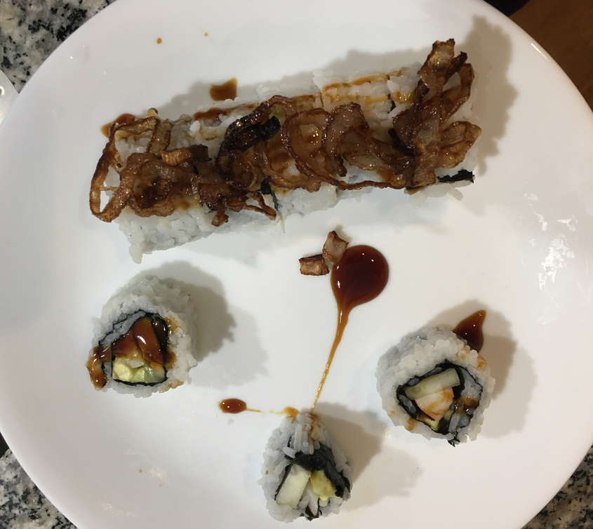
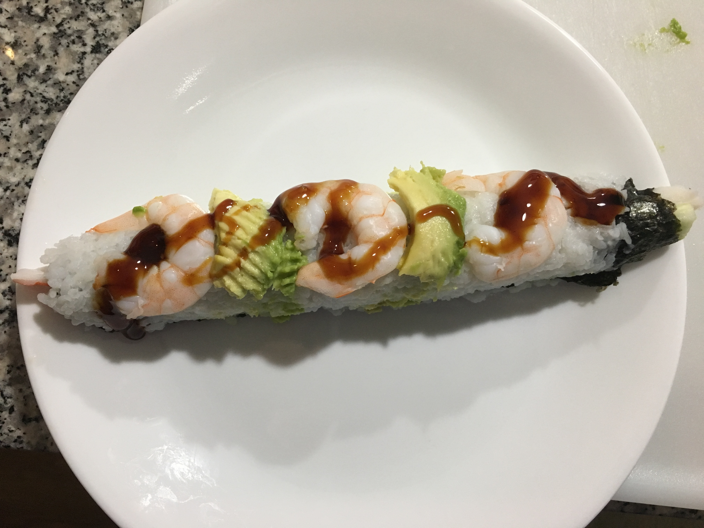
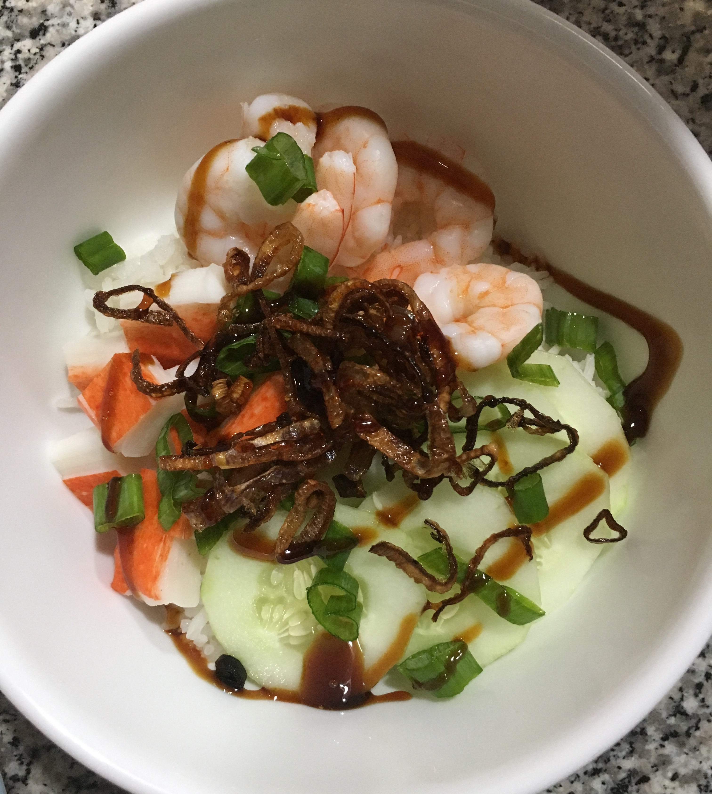
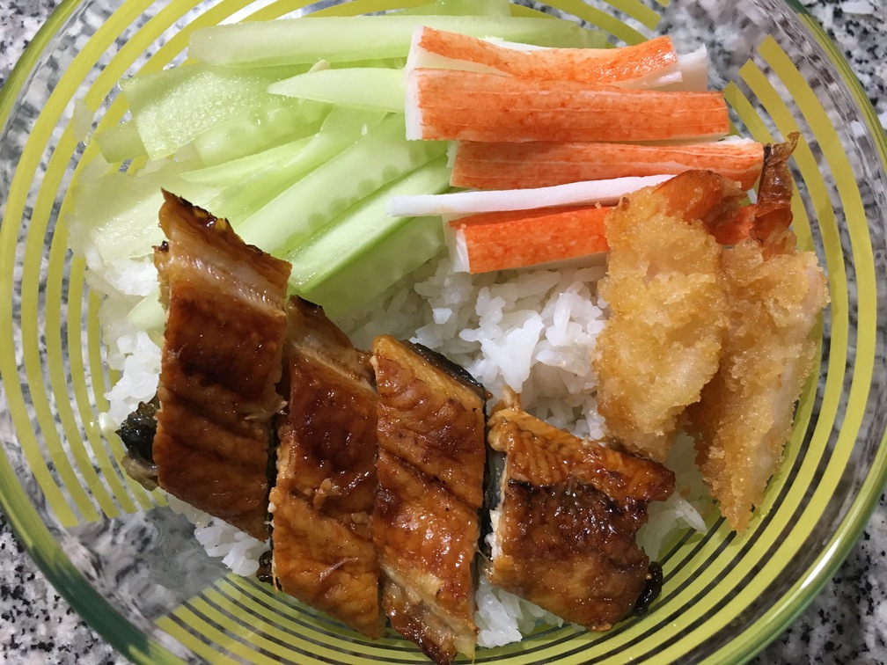

| Other | Meat | Veggie | Fruit |
|---|---|---|---|
| eel sauce | crab | carrot | avocado |
| japanese mayo | eel | cucumber | |
| rice | eggs | hanh kho | |
| rolling mat | pork belly | seaweed paper | |
| shrimp | spinach |
| instructions |
|---|
| Press 3/4 of the seaweed paper with rice with flip over with empty rice side near body |
| Place ingredients in a row and tightly roll using rolling mat |
| To prepare eel, buy barbecued eel from Asian store and bake at 350F for 15 minutes |
| Fry both sides of sliced pork belly until not pink, then add sauce with ratio 1 sugar : 1 mirin : 2 soy sauce and some garlic |
| Filling suggestions: |
| carrots, spinach, thin egg omelette, crab |
| any combo of crab, shrimp tempura, eel with cucumbers, avocado, hanh kho, eel sauce and japanese mayo |